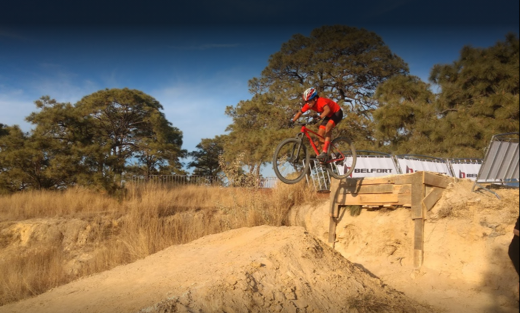

MUNICIPIO DE TALA, JALISCO
Tala cuenta lugares Turisticos como:
- Los Chorros de Tala, un balneario de agua natural
- Villa Felicidad
- Templo de San Francisco de Asís
- Capilla del Rosario
- Hacienda del Refugio de Orendaín.
- Los Jarros la Noria
- En el Valle de Tala se encuentran diseminados vestigios arqueológicos
de lo que en la época prehispánica fueron adoratorios o cués.
En la región son conocidos como Guachimonton.
- El municipio cuenta con bosques naturales en "La Primavera",
Cerro de Las Garzas,
Cerro Monte Negro, Cerro Las Navajas y
balnearios como Los Tejabanes y El Rincón.
Este destino es ideal para practicar deportes al aire libre y ha sido escenario de grandes eventos nacionales e internacionales.
Su cercanía con el Bosque La Primavera te permitirá disfrutar sus bellezas naturales y actividades ecoturísticas como
ciclismo de montaña, senderismo, escalada, rápel y avistamiento de aves, entre otras.
Cuenta con aguas termales, temazcales y manantiales.
Tala ofrece también una ruta de haciendas y exhibiciones del Museo Arqueológico Tlallan.

ES SITIO WEB SE ELABORO CON FINES EDUCATIVOS, COMO PARTE DE LA ACTIVIDAD DE LA MATERIA DE CONSTRUYE PAGINAS WEB
Nombre: Jocelyn Lizeth Cruz Hernandez.
Estudio en: CETIs No. 161
Nombre: Jocelyn Lizeth Cruz Hernandez.
Correo: joce09475@gmail.com